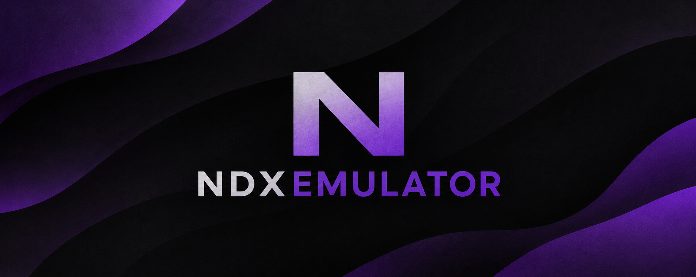

Biblioteca organizada por console, saves automáticos que retomam de onde você parou, controle físico com suporte completo e velocidade ajustável.

Seus jogos organizados por plataforma, com capa e miniatura de cada save.
Salva ao pausar, ao sair e a cada 60 segundos. Você sempre continua de onde parou.
Jogue ROMs dentro de arquivos compactados, sem extrair nada.
Bluetooth e USB. Os botões da tela somem sozinhos quando um controle é detectado.
Acelere quando quiser pular a parte chata, com um aviso bem-humorado para lembrar da história.
Tela cheia, esticado, 16:9, shader CRT ou LCD e escala de renderização por jogo.
| Console | Núcleo |
|---|---|
| PlayStation 1 | PCSX ReARMed (nativo), DuckStation (app externo) |
| PlayStation 2 | PCSX2 |
| PSP | PPSSPP |
| Nintendo 64 | Mupen64Plus-Next |
| Nintendo DS | melonDS |
| Game Boy Advance | mGBA |
| Dreamcast | Flycast |
| GameCube e Wii | Dolphin (app externo) |
Em Configurações, escolha onde estão suas ROMs. Você pode usar pastas ou arquivos ZIP e 7z.
Na tela inicial, toque no console e veja a biblioteca dele.
Continue de onde parou, comece do zero ou ajuste as configurações só daquele jogo.
Os saves são mantidos. Atualizações não apagam nada.
Escolha um destino fora do app em Dados salvos e ative o backup automático.
Depois de reinstalar, use a opção Restaurar para trazer os saves de volta.
Baixe a versão mais recente pelo GitHub Actions e aproveite.
Baixar o APK